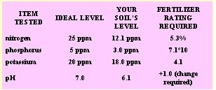
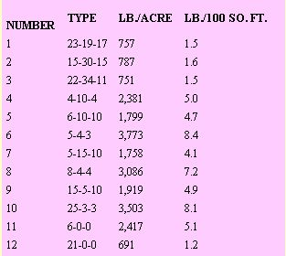
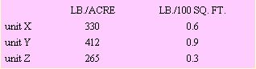
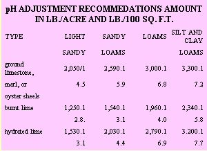
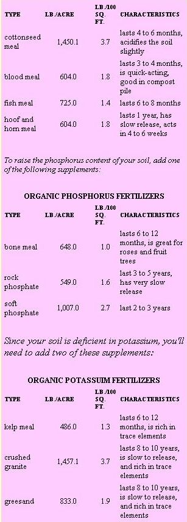

This clever entrepreneur tells how to use your Apple to hit pay dirt . . . by making dirt pay!
Last year, as I stood near enormous stacks of soil amendments on display at the local garden shop, I was struck by the close resemblance between fertilizing a crop plot and playing Russian roulette.
I speak from my own experience, since I had never been certain exactly which additives were needed in my soil each spring. Nor had I found much help-or solace-in the warnings printed on commercial fertilizer packages. According to those guides, if I skimped on my amendments, I might not see any positive results in my garden. Yet if I overcompensated, I might "burn" my soil! Moreover, by following some of the generalized recommendations on the product labels, I could easily soak $50 into my front lawn alone, even if all my ground needed was a few dollars' worth of potash.
Finally, I concluded that I really needed to have my soil tested before I could, with any guarantee of success, begin a fertilizing program. In my part of Oregon, however, getting one soil exam (from a professional consultant) costs $20 . . . and that figure doesn't even include interpreting the resultant data. Being nobody's fool, I went back to the same garden outlet later and purchased a do-it-yourself soil test kit. True, the packet of chemicals cost $36, but I could use it for dozens of tests.
I then spent a few hours testing the earth in my garden, lawn, and flowerbeds. The procedure was simple enough to follow. The trouble was, the charts for interpreting the data were pretty complicated to deal with. It didn't take long for me to realize, though, that my Apple II home computer could decipher the data a lot faster than I could. In fact, the computer could be programmed to print out a report giving specific recommendations and options customtailored to each set of test results. Figuring that other people had the same problem with soil analysis that I had, I decided that providing a testing service could be a terrific business opportunity!
It took several days to develop the computer program, and during that time I ordered the necessary chemicals and test tubes in bulk quantities. My wife and I made up some advertising posters-with tear-off order forms-and thumbtacked them up at garden supply shops, feedstores, farm co-ops, country grocery markets, and lawn and garden nurseries in our environs.
Within a week's time, samples of soil began trickling in. By mid-June, my business had ballooned so that I had to set aside one day a week just to do tests. Now, I can manage five at once, and each round of them takes me only about 50 minutes. So, at $10 per test, I figure my time is well spent! Of course, a lot of my day is also devoted to advertising my service, ordering supplies, and waiting for the computer's printouts. Then too, this business is quite seasonal, as you might expect, so the winter months are often relatively slow.
SPREADING THE WORD
Advertising is a career in itself, and my simple methods doubtless leave much room for improvement. My wife and I keep in close touch with the surrounding nurseries, and a lot of our business comes through them. I've also put ads in the newspapers and weekly classified pages. All in all, though, my poster pinups have brought me the majority of my customers.
Along with each set of test results, I send a cover letter and, if the customer tells me where he or she saw my ad, a plant pH-preference chart. (That way, I can gauge which of my ads are most effective.) Requiring the client to send along a self-addressed, stamped envelope with the soil sample keeps my clerical work to a minimum.
TEST TIPS
Once you've done a soil analysis a few times, the actual procedure is relatively easy. I spread a sheet of paper out on a table and use a plastic flour sieve to sift a few tablespoons of soil. Next, I fill four plastic test tubes to the level specified in the instructions that accompanied the analysis kit. Appropriate indicating chemicals then go into each tube, a stopper is set on top, and the contents are thoroughly mixed. After filtering and collecting each solution, I compare their colors with the charts in the instruction booklet . . . which also states the values of the various soil elements. Once all the examinations are completed, I discard the tubes and stoppers, because cleanliness is of the utmost importance to the testing procedure (used test tubes might be contaminated with traces of nitrates, potassium, and phosphorus).
THE COMPUTER COMPLETES IT
The next step is to type the results into my computer, including the name and address of the client for use in future advertisements. The machine then prints out a complete report on the test . . . adding some informative material on the nature of soil chemistry, and a thorough application guide for both organic and chemical fertilizers. [EDITOR'S NOTE: A sample report is reprinted in the sidebar that accompanies this article.]
Naturally, no two reports are exactly alike. Each one lists only the information pertinent to the particular test results. For example, if the soil is "sour" or acidic, the report contains detailed instructions on how to add lime. On the other hand, if the soil tests alkaline, the liming directions are omitted, and in their place is a discussion of ways to reduce its pH. Moreover, every report contains tips on applying organic fertilizers . . . a topic virtually overlooked by any other soil test reports I've seen.
I'm unable, unfortunately, to include analyses of "minor" nutrients such as calcium and magnesium and of "trace elements" such as boron and manganese in my reports, simply because testing for those nutrients requires relatively sophisticated (and expensive) procedures. But my service does provide my customers with a valuable awareness of the overall condition of their gardens, and reveals major deficiencies. I'm always careful to point out that balance is the key to a healthy, productive soil . . . and that simple practices-such as planting green-manure cover crops-can go a long way toward providing the additional "minor" and "trace" nutrients necessary for good plant growth.
IN RETROSPECT
After a solid year's experience in soil testing, I'm very pleased with the comments from my customers. In fact, much of my new business has come directly from referrals of happy clients. I make a point of being prompt: There are times when folks have hand-delivered samples to me, and I quickly performed the tests and telephoned the data to them. Nurseries, in particular, appreciate getting fast results, since it allows them to test new shipments of potting and fill soil immediately. Considerate service goes a long way toward getting the word out to new business prospects.
Altogether, I guess you could say that my Apple computer and I have hit pay dirt . . . all by making dirt pay!
EDITOR'S NOTE: Terry Nelson has made his computer programs available to MOTHER's readers on diskettes suitable for the 48K Apple II for %30 each. The diskette features three programs: a file creator to store the names, addresses, test results, and analysis dates of the clients . . . the actual soil test routines . . . and an editor that allows you to make a mailing list and to reprint copies of reports. Write Terry at Dept. TMEN, P. O. Box 1, Camas Valley, Oregon 97416.
Sudbury Laboratories, Dept. 7MEN, Box 1B, Sudbury, Massachusetts 01776 is one source for chemicals and test tubes. Mr. Nelson has found that, at least in his own case, it's most economical to buy the chemicals from Sudbury and other equipment from a local chemical supply house.
And for some information on new varieties that should flourish in your well-prepared soil, please see "Pick of the Crop" on page 78 and "Seasons of the Garden" on page 178
A SAMPLE SOIL ANALYSIS READOUT
SOME GENERAL INFORMATION
Plants need carbon [C], hydrogen [H], oxygen [O], nitrogen [N], phosphorus [P], potassium [K], sulfur [S], calcium [Ca], iron [Fe], and magnesium [Mg]. The first three elements are supplied by the atmosphere and water. The rest are supplied largely by the soil, provided that the pH is right. The pH is the measure of the relative acidity or alkalinity of the soil. A pH of 7 is neutral, lower than 7 is acidic, and higher than 7 is alkaline.
Nitrogen is an important constituent of protein. Proper balance of this element in your soil will provide dark green foliage and active growth. Nitrogen is especially essential for vegetables in which leaves, stalks, or stems are the important end products.
Deficiency of this nutrient results in a sickly yellow-green coloration, distinctly slow and dwarfed growth, or drying (`firing") of leaves, starting at the bottom of the plant. In corn, grains, grasses, and the like, firing starts at the tip of the bottom leaves and proceeds down the center or along the midrib.
Excessive nitrogen causes too rapid growth, resulting in soft tissues and general weakness of the plant. Too much nitrogen at flowering time causes the plant to continue active vegetative growth, retarding flower and seed formation.
Phosphorus (also known as phosphate) stimulates early root formation and growth. It's responsible for a rapid and vigorous growth start, and it stimulates blooming and seed formation. Proper phosphorus levels in the soil also help to hasten maturity and give winter hardiness to fall-seeded hay and grain crops.
Deficiency of this element produces purplish leaves, stems, and branches. Other symptoms include slow growth and failure to reach maturity in a timely manner. In corn, phosphorus deficiency causes small stalks to form, and in grains it promotes lack of stooling. Low yields of grain, fruit, and seed are typical symptoms of phosphorus deficiency.
Potassium (also known as potash) is important for the formation and transfer of starches, sugar, and other carbohydrates within a plant. It imparts increased vigor and disease resistance to plants, and aids in the production of strong, stiff stalks. Potash is very important to root, tuberous, and bulb plants. For large mealy potatoes, juicy carrots and beets, and healthy dahlias, be sure there's adequate potash in the soil.
Lack of potassium results in mottling, spotting, streaking, or curling of leaves, beginning on the lower levels of the plant. These lower leaves will appear to be scorched or burned on the margins and tips. The dead areas eventually fall out, leaving ragged edges. This results in a premature loss of leaves and, in plants like corn, a tendency to fall down because of poor root development. In corn, grain, and grasses, potash-deficient firing starts at the tip of the leaf and proceeds down the edge, usually leaving the midrib green.
Excessive potassium in the soil causes plants to retain water, resulting in high susceptibility to both drought and frost injury.
To put these results another way, your soil's pH level is mildly acid, the level of nitrogen is fair, the phosphorus level is good, and the potassium level is good. In light of these results, our recommendation is to raise the pH by 1, raise the nitrogen with 5.3% nitrogen fertilizer, raise the phosphorus with7.1% phosphorus fertilizer, and raise the potassium with an appropriate fertilizer rated at 4.1 %.
Because almost every gardener's fertilizer needs are unique, your local nurseries and fertilizer supply houses take great care to stock a wide variety of soil amendments. Usually one of the combination fertilizers listed below (in order of preference) will meet your needs.
As an alternative, you can mix your own fertilizer from "basic ingredients" so that it closely matches your individual requirements. This is often very economical, since the ingredients are more concentrated than typical combination fertilizers. Sudbury makes the commonly available formulations Unit X (44%-0-0), Unit Y (0-44%-0) and Unit Z (0-0-44%). If you find this method more desirable than using a combination fertilizer from the above table, the amounts you should apply are as follows:
To make the pH adjustments for your soil, estimate your general soil type, then choose one of the following modifiers. (For soils low in organic matter, reduce the amounts by 25%. For soils high in organic matter, increase them by 100%.)
ORGANIC FERTILIZATON
Organic fertilizers not only supplement your soil with needed primary nutriments such as nitrogen, phosphorus, and potassium, but also supply crucial trace elements. And organic supplements tend to be "timed release" in action and generally are more gentle, consistent fertilizers than "chemical" feeders are.
Because your soil is deficient in nitrogen, you'll need to add two of these supplements:
CALCULATING YOUR OWN FERTILIZER AMOUNTS
In the event that you'd like to use some nutrients not given in this analysis, you can figure out the amount of fertilizer you'll need by using this formula:
Amount needed (lb./acre) = % needed ÷ % in fertilizer X 2, 000
Example: If you're using steer manure [.7%N/.3%P/.4%K] and from your soil analysis results you read that the "fertilizer rating required" is 2.2% for nitrogen, 0.6% for phosphorus, and 1.1 % for potassium, you can calculate the amount of manure needed in this way:
To meet the N requirement: 2.2 ÷ 0.7X 2,000 = 6,282 Ib./acre
To meet the P requirement: 0.6 ÷ 0.3 X 2,000 = 4,000 lb./acre
To meet the K requirement: 1.1 ÷ 0.4 X 2,000 = 5,500 lb./acre
This doesn't mean that you must apply 6,286 + 4,000 + 5,500 pounds per acre, but it means that if you apply 5,500, you will be supplying enough potassium, a little more phosphorus than is needed, but not quite enough nitrogen. So in this case, you might want to compromise a bit and apply 6,000 pounds per acre.
To convert the above figures to pounds per 100 square feet, divide them by 435.6. In other words, [Ib./100 sq. ft.] = [lb./acre = 435.6]. For the example above, you'd apply 13.8 (6,000 = 435.6) pounds of steer manure per 100 square feet.
EDITOR'S NOTE: The nonorganic fertilizers recommended here are those most commonly available in Mr. Nelson's locality. That part of the program, then, should be revised-simple, if you know BASIC computer language-to apply to areas where other formulations are more widely stocked. You might also note that bulk fertilizer elements in 100-pound bags, bought cooperatively with neighbors, are a less expensive alternative to commercial customizing preparations that come in small quantities.
Not all soil experts or gardeners agree on data interpretation and appropriate action. Many suggest a mildly acid (6.5 pH) soil rather than a neutral one. Nutrient levels, fertilizer formulations, and application rates are all open to debate, so you might modify the author's program or create your own to reflect your horticultural philosophy and expertise.
An excellent source of information on soil health, analysis, and balanced fertilizer formulations for a variety of purposes and plants is The Bio-Dynamic Gardener's Bible by Lee Fryer (to whom, not incidentally, we express our gratitude right here and now for the invaluable advice given us in the preparation of this article). Lee's fine 240-page book is available for $9.95 plus $1.25 postage and handling from Mother's Bookshelf, 105 Stoney Mountain Road, Hendersonville, North Carolina 28791.
|
 YOUR SOIL ANALYSIS RESULTS |
 POPULAR NONORGANIC COMBINATION FERTILIZERS |
 ORGANIC NITROGEN FERTILIZERS |
|
 |
 |
|